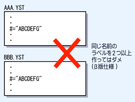

| ■TOP＞命令一覧＞その他命令＞LABEL［］ |
| LABEL［］ LABELINFO［］ MACRO［］ DIALOG［］ TRAY［］ |
■ラベル設定命令 LABEL[ ] ラベルを設定します。この命令は特別にコマンドの記述を省略することができます。 LABEL[#="ラベル名"] 省略して、 #ラベル名 #=ラベル名 #="ラベル名" と記述することも出来ます。 ラベルを設定した地点へ、GO 命令や GOSUB 命令などでその地点へジャンプする事が 出来るようになります。また、TASK 命令によるタスクの生成時にもラベルを使用します。 同じファイル内はもちろん、他のファイルも含めて、２つ以上の同じ名前のラベルを 作ることは現状では出来ません。 これは今後のバージョンアップにおいて、少し改良を行う予定です。 |
 |